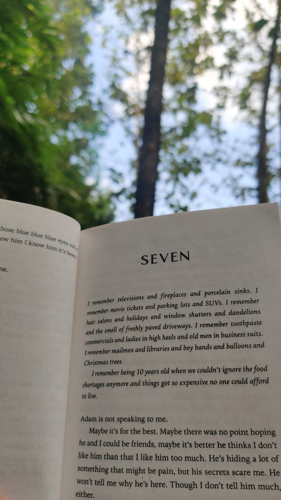
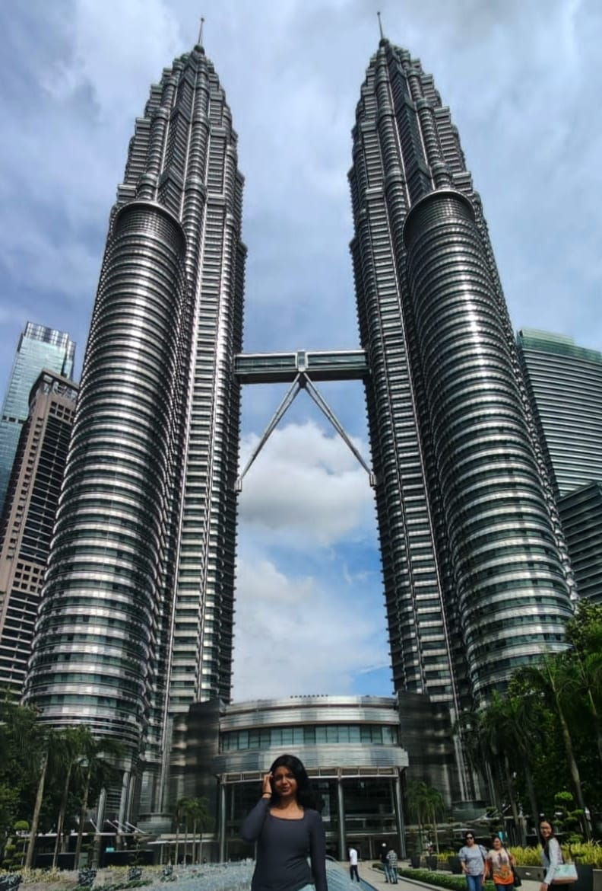
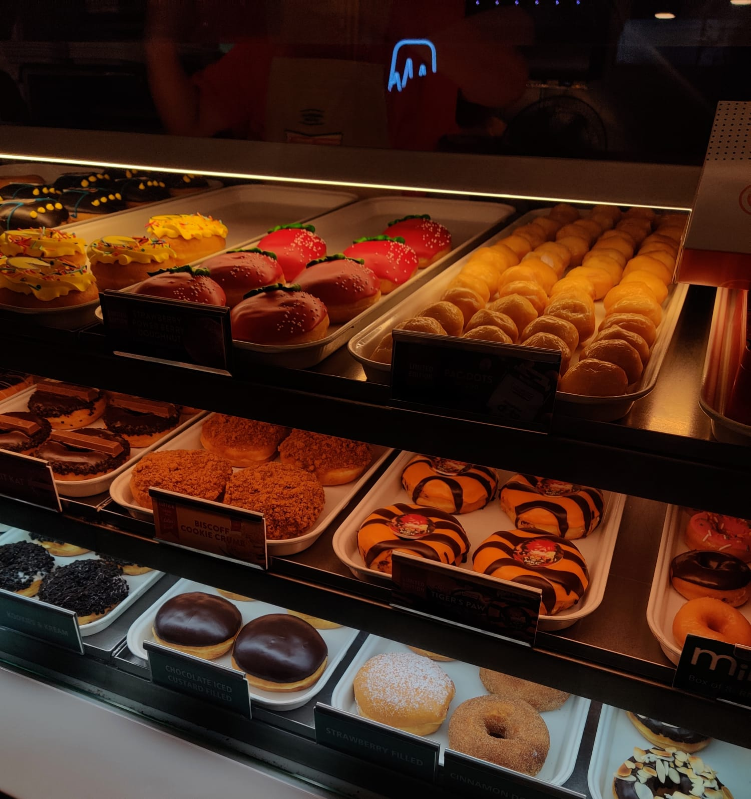
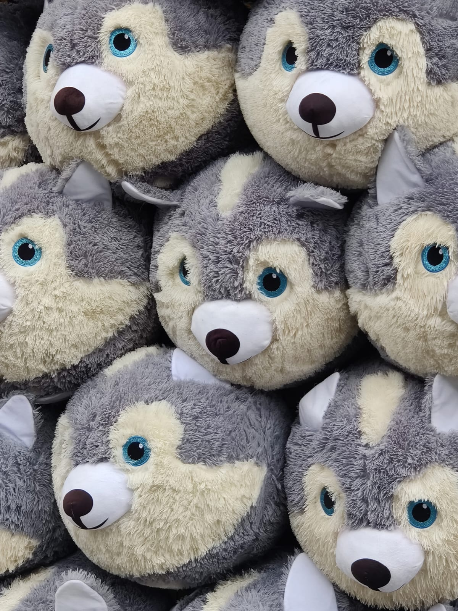

I'm a final year Computer Science Student from God's Own Country, Kerala in India. I enjoy learning new things and turning ideas into code. I love thoughtful conversations, getting lost in a good book, and curating oddly specific playlists. I'm just figuring things out as I go, and honestly, kind of impressed with how far I’ve come.
My coding journey kicked off in 2021 with the KWK Web Development camp, where I built my first website and realized tech could be both fun and powerful. That spark led me to take Computer Science classes in high school, and before I knew it, I was diving headfirst into a full-on CS degree. Since then, I’ve been exploring the world of code one project at a time learning new things, messing up a lot, and slowly figuring out what kind of tech I actually enjoy building.
Here are some pics I took :)
   